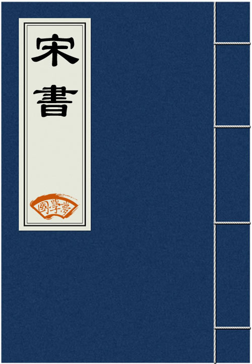

传播国学经典
养育华夏儿女
搜索
首页
国学经典
古诗
诗词名句
诗人大全
成语大全
三字经
千字文
论语
易经
大学
中庸
唐诗
历史
国学知识
古诗鉴赏
当前位置:
国学梦
>
国学经典
>
宋书
>

宋书
《宋书》，二十四史之一，由南朝梁沈约（441─513年）等人所著。沈约学术渊博，才华出众。齐武帝永明五年（487）奉诏撰《宋书》，写成本纪10篇、列传60篇、志30篇，共一百篇。《宋书》的志有八类，包括《律历志》、《礼志》、《乐志》、《天文志》、《符瑞志》、《五行志》、《州郡志》、《百官志》，号称《宋书》八书，分量占全书的一半。
本纪·卷一
本纪·卷二
本纪·卷三
本纪·卷四
本纪·卷五
本纪·卷六
本纪·卷七
本纪·卷八
本纪·卷九
本纪·卷十
志·卷十一
志·卷十二
志·卷十三
志·卷十四
志·卷十五
志·卷十六
志·卷十七
志·卷十八
志·卷十九
志·卷二十
志·卷二十一
志·卷二十二
志·卷二十三
志·卷二十四
志·卷二十五
志·卷二十六
志·卷二十七
志·卷二十八
志·卷二十九
志·卷三十
志·卷三十一
志·卷三十二
志·卷三十三
志·卷三十四
志·卷三十五
志·卷三十六
志·卷三十七
志·卷三十八
志·卷三十九
志·卷四十
列传·卷四十一
列传·卷四十二
列传·卷四十三
列传·卷四十四
列传·卷四十五
列传·卷四十六
列传·卷四十七
列传·卷四十八
列传·卷四十九
列传·卷五十
列传·卷五十一
列传·卷五十二
列传·卷五十三
列传·卷五十四
列传·卷五十五
列传·卷五十六
列传·卷五十七
列传·卷五十八
列传·卷五十九
列传·卷六十
列传·卷六十一
列传·卷六十二
列传·卷六十三
列传·卷六十四
列传·卷六十五
列传·卷六十六
列传·卷六十七
列传·卷六十九
列传·卷七十
列传·卷七十一
列传·卷七十二
列传·卷七十三
列传·卷七十四
列传·卷七十五
列传·卷七十六
列传·卷七十七
列传·卷七十八
列传·卷七十九
列传·卷八十
列传·卷八十一
列传·卷八十二
列传·卷八十三
列传·卷八十四
列传·卷八十五
列传·卷八十六
列传·卷八十七
列传·卷八十八
列传·卷八十九
列传·卷九十
列传·卷九十一
列传·卷九十二
列传·卷九十三
列传·卷九十四
列传·卷九十五
列传·卷九十六
列传·卷九十七
列传·卷九十八
列传·卷九十九
列传·卷一百
国学经典推荐
国学经典
诗人
初唐四杰
爱国诗人
唐宋八大家
唐诗三百首
宋词三百首
写景诗
咏物诗
边塞诗
中秋节
抒情诗
爱国诗
离别诗
送别诗
思乡诗
思念诗
励志诗
悼亡诗
哲理诗
爱情诗
婉约词
惜时诗
写人诗
赞美母亲
赞美老师
古诗
古诗十九首
经典咏流传第三季
小李杜
中国诗词大会第六季
中国好诗歌
钱肃乐
虞世南
祝颢
宇文融
陈亮
刘孝孙
绿草如茵
掩耳而走
敛容息气
短褐不完
 皖公网安备 34160202002390号
皖公网安备 34160202002390号